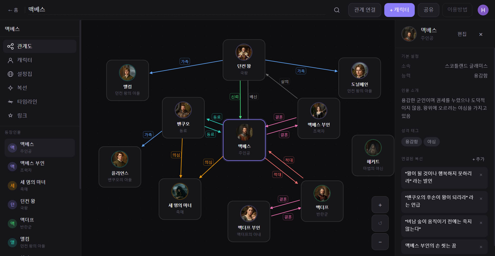
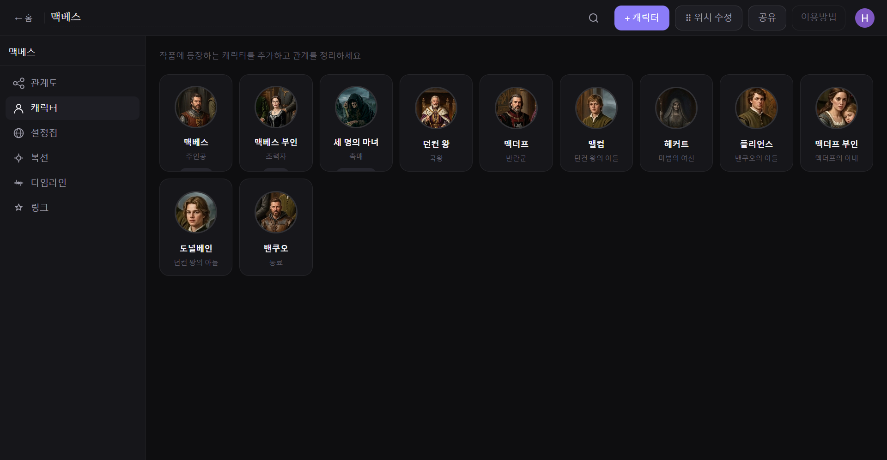
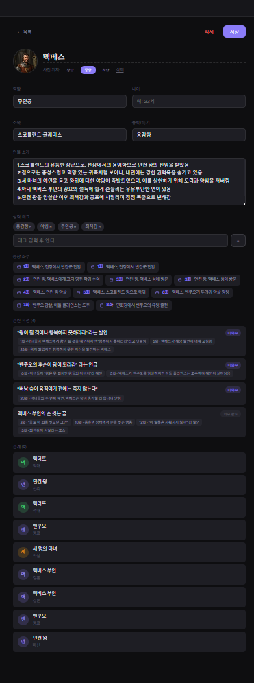
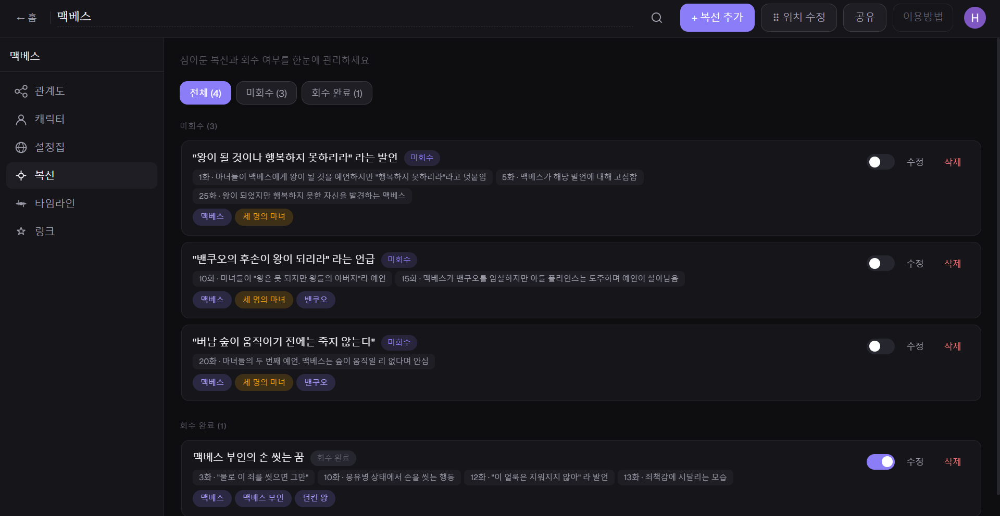
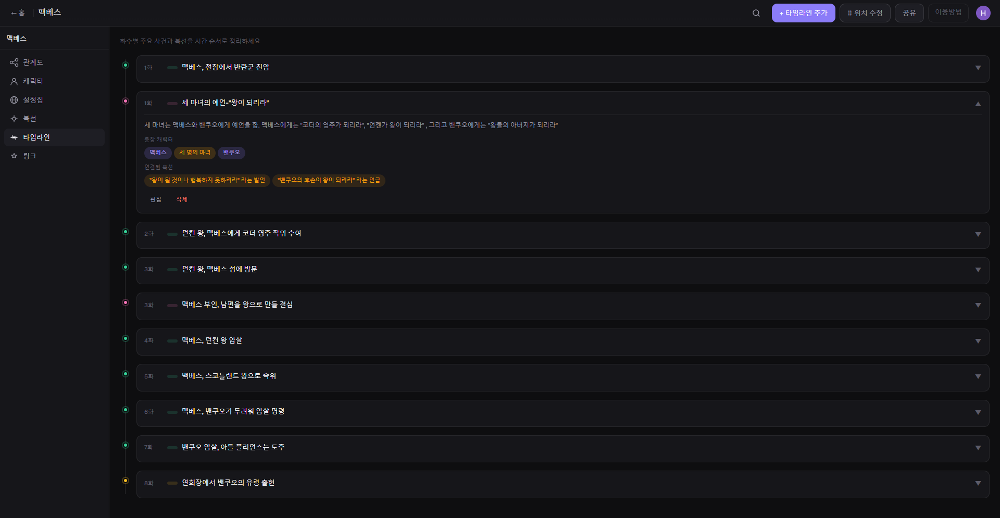
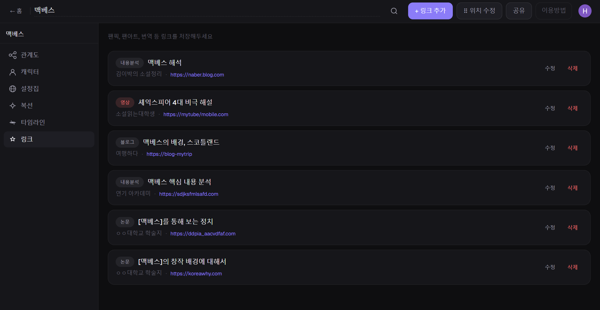
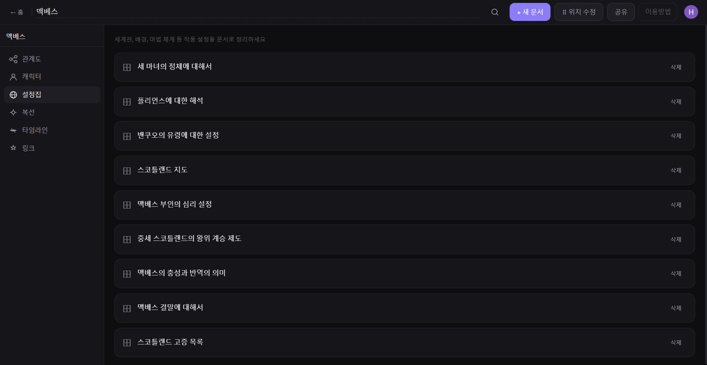

카토그래픽의 주요 기능을 탭별로 살펴보세요.

맥베스 예제 — 캐릭터 간 관계가 색상별 선으로 표시돼요
상단의 관계 연결 버튼을 누르면 연결 모드가 활성화돼요. 연결할 캐릭터 카드를 순서대로 클릭하면 관계선이 생겨요. 관계선에 이름(사랑, 배신, 동료 등)과 색상을 지정할 수 있어요.
관계도에서 캐릭터 카드를 클릭하면 오른쪽에 인물 상세 패널이 열려요. 소속, 능력, 성격 태그, 연결된 복선, 관계 목록을 한눈에 볼 수 있어요.
캐릭터 카드를 드래그해서 원하는 위치에 자유롭게 배치할 수 있어요. 배치한 위치는 자동으로 저장돼요.
팁: 우측 하단 +/− 버튼으로 관계도를 확대·축소할 수 있어요. 캐릭터가 많을 때 유용해요!

캐릭터 목록 — 프로필 사진과 역할이 카드로 표시돼요
캐릭터마다 이름, 역할, 소속, 능력, 인물 소개, 성격 태그, 프로필 사진을 입력할 수 있어요. 카드를 클릭하면 오른쪽 패널에서 수정할 수 있어요.
캐릭터 상세 패널에서 해당 인물이 등장하는 타임라인과 연결된 복선을 바로 확인할 수 있어요. 타임라인·복선 탭에서 캐릭터를 연결하면 캐릭터 탭에 자동으로 반영돼요.
캐릭터 카드에 사진을 업로드할 수 있어요. 사진 위치(상단·중앙·하단)도 조정 가능해요.

캐릭터 상세 — 소개·복선·관계를 스크롤하며 확인할 수 있어요
팁: 캐릭터 탭 상단 검색창으로 여러 탭에 걸쳐 한 번에 검색할 수 있어요.

복선 목록 — 미회수/회수 완료 상태를 토글로 관리해요
복선 제목과 함께 몇 화에서 언급되었는지를 상세하게 추가할 수 있어요. 화수와 언급 내용을 여러 개 추가해서 복선이 작품 전체에서 어떻게 흐르는지 추적할 수 있어요.
복선마다 회수 완료 / 미회수로 상태를 구분해요. 상단 필터 버튼으로 미회수 복선만 모아서 볼 수 있어요.
복선과 관련된 캐릭터를 연결해두면 캐릭터 탭의 상세 패널에서 해당 복선을 바로 확인할 수 있어요. 인물과 복선을 함께 관리할 수 있어요.
팁: 복선 회수 여부는 토글 버튼으로 바로 변경할 수 있어요. 매화 검토할 때 빠르게 체크해보세요!

타임라인 — 화수별 사건이 시간순으로 정렬돼요
몇 화에 무슨 일이 일어났는지 등록해요. 유형(사건, 복선 심기, 복선 회수, 캐릭터 등장, 반전 등)을 직접 입력해서 분류할 수 있어요. 같은 유형은 같은 색으로 표시돼요.
타임라인 이벤트에 등장 캐릭터와 연결된 복선을 함께 등록할 수 있어요. 캐릭터 탭에서 해당 인물이 언제 등장했는지 자동으로 반영돼요.
모든 이벤트가 화수 기준으로 자동 정렬돼요. 이벤트를 클릭하면 상세 내용, 등장 캐릭터, 연결된 복선이 펼쳐져요.
팁: 위치 수정 모드에서 드래그로 순서를 바꿀 수 있어요. 수정 종료를 누르면 자동으로 저장돼요.

링크 목록 — 유형별로 색상 태그가 붙어요
작품과 관련된 외부 문서, 참고 자료, 2차 창작물 링크를 저장할 수 있어요. 링크를 클릭하면 새 탭에서 바로 열려요.
링크마다 제목, 작가/출처, 유형(그림, 소설, 영상, 논문 등)을 직접 입력할 수 있어요. 같은 유형끼리 색이 통일되어 한눈에 구분돼요.
팁: 2차 창작물뿐 아니라 작품 설정 참고 자료, 시대 배경 자료, 학술 자료 링크도 저장해두면 편리해요!

설정집 목록 — 주제별 문서를 자유롭게 추가하고 정렬할 수 있어요
세계관, 배경, 마법 체계, 사회 구조 등 작품에 필요한 설정을 자유롭게 문서로 작성할 수 있어요. 문서 개수 제한 없이(Pro 플랜) 원하는 만큼 만들 수 있어요.
내용을 작성하고 저장 버튼을 눌러 저장해요. 저장되지 않은 변경사항이 있으면 상단에 안내가 표시돼요.
문서 목록에서 제목을 클릭하면 편집 화면으로 이동해요. 위치 수정 모드에서 드래그로 문서 순서를 바꿀 수도 있어요.
팁: "마법 체계", "왕위 계승 제도", "지역별 특성" 등 주제별로 문서를 나눠 관리하면 나중에 찾기 편해요!